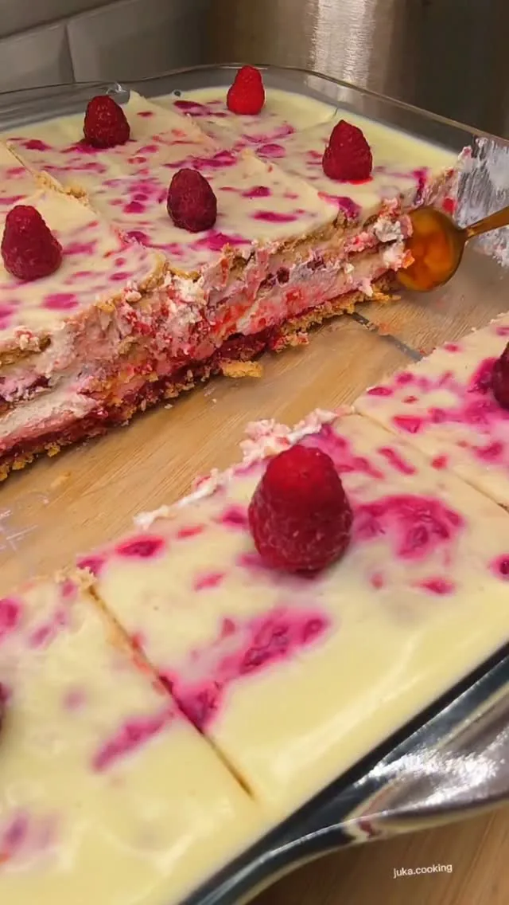

No-Bake White Raspberry Dream
Cremiger Kühlschrankkuchen mit weißer Schokolade, Mascarpone und fruchtiger Himbeerfüllung – ganz ohne Backen und einfach himmlisch! Perfekt für Geburtstage, Kaffeetafeln oder als süße Belohnung zwischendurch.
- 17 Zutaten
- 8 Schritte
Zur Zubereitung Video ansehen ↗
Zutaten
Zubereitung
- Himbeeren mit Zucker und Zitronensaft in einem Topf erhitzen, bis die Beeren weich sind.
- Kartoffelmehl mit 3 EL Wasser glatt verrühren und unter ständigem Rühren zu den Himbeeren geben. Kurz aufkochen lassen, bis die Masse schön eindickt.
- Etwas Himbeerfüllung für die Dekoration beiseitestellen und alles abkühlen lassen.
- Frischkäse, Mascarpone und Puderzucker cremig verrühren. Die geschmolzene und abgekühlte weiße Schokolade unterrühren. Anschließend die Schlagsahne dazugeben und alles zu einer glatten, cremigen Masse verrühren.
- Eine Schicht Butterkekse in die Form (25 × 25 cm) legen. Darauf die Himbeerfüllung verteilen und anschließend die Creme daraufgeben.
- Die Schichten wiederholen und mit einer Schicht Butterkekse abschließen.
- Weiße Schokolade und Schlagsahne vorsichtig miteinander schmelzen und glatt rühren. Die Glasur über den Kuchen geben und mit der restlichen Himbeerfüllung dekorieren.
- Den Kuchen anschließend für mehrere Stunden, am besten über Nacht, kalt stellen.
Tipp: Gut gekühlt lässt er sich besonders schön schneiden und schmeckt wunderbar cremig!